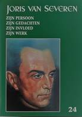

> nieuwsbrief > JAAR 2020- nr 4
Inhoud
Hernieuwen ledenbijdrage voor 2020
Het nieuwe Jaarboek Joris van Severen kwam ondertussen
van de pers (zie verderop voor wat de inhoud betreft). Wie tot
op heden naliet zn ledenbijdrage te vereffenen kan dit alsnog
doen..
De minimumbijdrage bleef behouden op 29 . In ruil
daarvoor verzekeren we u de stipte toezending van het nieuwe Jaarboek Joris van Severen
het 24e al van zodra we de achterstallige bijdrage
mogen boeken. Vereffening graag via onze rekening IBAN: BE71
0001 7058 1469 BIC: BPOTBEB1 t.n.v. Studiecentrum Joris van
Severen, Paddevijverstraat 2, 8900 Ieper.
Register jaarboeken Joris van Severen
Momenteel
wordt overwogen om, samen met het Jaarboek Joris van Severen
25 (2021), een personenregister uit te brengen over de dan
al 25 verschenen Jaarboeken. Méér hierover in de volgende Nieuwsbrief.
Echo Jaarboek Joris van Severen 24 (2020)
Vriendschap tussen Van Severen en
Nothomb
Verdinaso-leider
Joris
van Severen en Waals politicus en Belgicist Pierre Nothomb
waren aan de vooravond van de Tweede Wereldoorlog politieke en
persoonlijke vrienden. Nothomb bepleitte - tevergeefs - de
vrijlating van Van Severen na diens arrestatie bij de Duitse
inval op 10 mei 1940. Het Joris van
Severen-jaarhoek zocht naar de redenen van deze
ongewone vriendschap.
Al bijna
een kwarteeuw brengt het Studiecentrum Joris van Severen een
jaarboek uit met historische analyses en studies over het leven
en werk van de legendarische Verdinaso-leider. De bron van
onderwerpen lijkt onuitputtelijk. In het net verschenen jaarboek
2020 gaat historicus Ruud Bruijns dieper in op de contacten
tussen Joris van Severen (1894-1940) en Pierre Nothomb
(1887-1966). Beide heren konden niet meer van elkaar
verschillen. Van Severen was eerst een flamingant die zelfs ooit
sympathieën voor de communisten had en zich daarna ontpopte tot
een conservatief-revolutionair en antiparlementair Groot- en
Heel-Nederlander. Nothomb was een katholiek politicus uit
Doornik, maar met een sterke band met de Ardennen, verkozen in
Kamer en Senaat. Hij stamde af uit een familie die deelnam aan
de Belgische revolutie van 1830. Een Belgische patriot en
anti-flamingant die na WO I pleitte voor de aanhechting van
Luxemburg, Zeeuws-Vlaanderen, Nederlands-Limburg en delen van
het Rijnland en de Eifel bij België.
Belgische neutraliteitspolitiek
Toch
ontstond er vanaf november 1939 een politieke en zelfs
persoonlijke band tussen Van Severen en Nothomb, vader van
ex-Kamervoorzitter, ex-minister en ex-PSC-voorzitter
Charles-Ferdinand. Reden van de toenadering was de gezamenlijke
visie op de Belgische neutraliteitspolitiek voor WO II. Van
Severen was met zijn Nieuwe Marsrichting sinds 1934 steeds meer
in pro-Belgische zin geëvolueerd en het Verdinaso was een
aanhanger van koning Leopold III. Nothomb stond grotendeels op
dezelfde lijn.
Men
hoopte bij een tweede wereldbrand te ontsnappen aan een Duitse
inval en indien dit niet gebeurde, dan was er nood aan een
patriottische opstoot. Bij soldaten en burgers. Dat was de
teneur van de oproep die Nothomb begin november l939 via het
Verbond voor Nationale Zelfstandigheid publiceerde. Van Severen
plaatste een Nederlandse vertaling in Hier Dinaso! Er
volgde een briefwisseling en gesprekken waarbij Van Severen
vroeg een prominente plaats te krijgen onder de lijst van
ondertekenaars van dit manifest. Nothomb stond daar open voor.
Volgens
Bruijns hadden beide heren belang bij een toenadering. Nothomb
hoopte op die manier toegang te krijgen tot het netwerk van Van
Severen. De Verdinaso-leider zelf rekende erop dat zijn contact
met Nothomb zijn beweging salonfähiger zou maken. Het Verdinaso
werd als antiparlementaire beweging nog altijd in het oog
gehouden door de Staatsveiligheid. Van Severen vreesde voor
beperkende maatregelen (publicatieverbod, censuur,...) waar
Vlaams-nationalisten en communisten het slachtoffer van werden.
Bruijns
stelt in zijn bijdrage in het jaarboek dat allerlei
verbodsmaatregelen van begin de jaren '30 (geen privémilities,
uniformverbod, ...) Van Severen tot De Nieuwe Marsrichting - van
het anti-Belgische Grootneerlandisme naar een Benelux-denken
avant la lettre - zou hebben genoopt om zo respectabel te worden
voor het establishment. Een vreemde stelling, want dat zou
betekenen dat de pro-Belgische switch van het Verdinaso pure
tactiek en pose was.
Abbeville
Maar
terug naar de relatie met Nothomb. In het voorjaar groeiden Van
Severen en de Waalse politicus meer en meer naar elkaar toe. De
contacten werden vriendschappelijk. Ze ontmoetten elkaar
informeel om over politiek te praten. Nothomb steunde het
Verdinaso ook financieel en stond steeds meer open voor het idee
van de hereniging der Nederlanden.
Ondanks
zijn pro-Belgische houding werd Van Severen op 10 mei 1940 toch
opgepakt door de veiligheidsdiensten. Nothomb probeerde hem nog
vrij te krijgen. Op een bepaald moment dacht Pierre Nothomb dat
dit door zijn lobbywerk effectief zou gebeuren. Hij stuurde Van
Severen zelfs nog een brief daarover. Tevergeefs. Van Severen
werd uitgeleverd aan Frankrijk en op 20 mei in Abbeville
vermoord.
PICARD
________________
N.a.v.:
Joris van Severen jaarboek 24.
Te bestellen bij het Studiecentrum Joris van Severen vzw,
Paddevijverstraat 2, 8900 Ieper, 057/20.41.94 of secretariaat@jorisvanseveren.org
Bron: t
Pallieterke, 2 juli 2020, p. 7.
De Doorbraak-bijdragen
in vorig nummer bereiken ondertussen
op 7/7/2020 al 4767 de lezers!
Dieter Vandenbroucke
(*)
Op 20 mei 2020 is het exact tachtig jaar geleden dat
Verdinaso-oprichter Joris van
Severen standrechtelijk werd geëxecuteerd. Hoog tijd voor
een nieuwe kijk op Vlaanderens eerste fascist. Dieter
Vandenbroucke werkt aan een boek, waarin de focus ligt op de
relatie tussen het publieke en het privéleven van Van Severen.
Hoe slaagde hij erin
zijn rol als soldateske Nieuwe Orde-leider te verzoenen met zijn vaak
chaotisch privéleven als dandy en vrouwenversierder? Was hier
sprake van een zekere dubbelzinnigheid of lagen beide
personages net in elkaars verlengde? In een verhalend en
meerstemmig boek gaat Van-denbroucke al schrijvend op zoek
naar antwoorden.
Vlaamse Hitler of
martelaar?
Met
alle herdenkingen rondom het einde van de Tweede Wereldoorlog
zouden we bijna uit het oog verliezen dat hieraan twee bewogen
decennia vooraf gingen. Een van de meest spraakmakende politici
uit het interbellum was ongetwijfeld Joris van Severen, de
oprichter van het fascistoïde Verdinaso. Collaboratie kan hem
echter niet worden aangewreven. Bij de Duitse inval op 10 mei 1940 werd hij samen met enkele
duizenden anderen, al dan niet terecht als staatsgevaarlijk
beschouwde burgers gearresteerd door de Belgische overheid. Zijn
konvooi liep vast in Abbeville, waar hij in het tumult door
Franse gendarmen werd gefusilleerd. Het Verdinaso zou zijn
leider niet lang overleven. Een deel van de leden stapte in de
collaboratie, anderen bleven erbuiten of namen deel aan het
verzet.
Niettegenstaande
zijn vroegtijdige dood werd Van Severen na de oorlog wel
degelijk als een zwarte gediskwalificeerd: tenslotte had hij
naam gemaakt als de onbetwistbare roerganger van een
antidemocratische en antisemitische Nieuwe Orde-beweging. Een
soort Vlaamse Hitler dus. Daartegenover stond dat vanuit
katholiek-rechtse hoek het beeld werd geconstrueerd van een
martelaar, een heldhaftige idealist die de loop van de
geschiedenis wilde veranderen maar door een corrupt regime werd
vermoord. In de stroom van in hoofdzaak hagiografische
publicaties die sindsdien over Van Severen verschenen bleef de
mens achter Van Severen onderbelicht. Terwijl het snel
uiteenvallen van zijn beweging aantoonde dat net zijn charisma
houvast had gegeven aan de beweging, veel meer dan een
vastomlijnde ideologie. Met een genuanceerd portret, gebaseerd
op zijn privé-archief, wil ik hierin verandering brengen. Wars
van idealisering of diabolisering kunnen zo de mechanismen
achter Van Severens aantrekkingskracht worden onthuld. In deze
blog beperk ik mij tot enkele aanzetten.
De nog steeds bestaande kiosk te
Abbeville, waar het bloedbad plaatsvond
Esthetisering van de
politiek
Uit
Van Severens dagboeken, notas en brieven spreekt een gelaagde
persoonlijkheid, een non-conformistische katholiek getekend door
zijn ervaringen als soldaat tijdens de Eerste Wereldoorlog en
voortdurend worstelend met de wereld, de liefde en vooral
zichzelf. Zoals reeds uit zijn in 2005 gepubliceerde
oorlogsdagboek blijkt, spiegelde de jonge Van Severen zich aan
zijn geliefkoosde auteurs, waaronder Charles Baude-laire, het
prototype van de poète maudit, en de decadente avonturier
Gabriele dAnnunzio. Aan die laatste ontleende hij ook een van
zijn levensmottos: Van mijn leven zelf een kunstwerk, een
groot gedicht, maken. Het klinkt poëtisch maar precies deze
fantasie zou hem naar extremistisch vaarwater drijven.
Na de
oorlog zocht Van Severen aansluiting bij de literaire
avant-garde maar zijn politieke ambities haalden al snel de
bovenhand. Als Kamerlid van de Vlaams-nationalistische
Frontpartij baarde hij opzien als dandy, een piekfijn geklede
womanizer die liever chique salons dan het parlement
frequenteerde. Daarnaast pleitte hij steeds nadrukkelijker voor
de vestiging van een autoritaire orde in het oude Europa. Het
uiterlijke ging hand in hand met het innerlijke. Is de dandy
immers niet de figuur bij uitstek die, uit verzet tegen de
democratische nivellering, het principe van de excellentie
incarneert?
Verdinaso,
nationale landdag 1934 (CegeSoma)
Geïnspireerd
door zijn politieke en literaire voorbeelden, veelal Franse
conservatieve schrijvers, beschouwde Van Severen niet alleen
zichzelf maar ook Vlaanderen als een grootschalig kunstwerk.
Halverwege de jaren twintig nam hij zich voor van zijn volk
prinsen en prinsessen te maken. Een wereld bouwen naar een
hiërarchie zoals ik die zie en willen zou, voegde de
zelfverklaarde aristocraat eraan toe. Vanuit dat streven
stichtte Van Severen in 1931 het Verbond van Dietsche Nationaal
Solida-risten, kortweg het Verdinaso. Zowel in het verenigde
Dietsland als in het solidarisme, met de familie, de beroeps-
en de volksgemeenschap als basis, zag hij de expressie van een
bepaalde schoonheid en orde. Voor de buitenwereld viel het
Verdinaso vooral op door zijn uitgesproken fas-cistische
uitstraling: een geüniformeerde militie, zorgvuldig in beeld
gebrachte massabijeenkomsten en de bewonderde Van Severen, als
voorafspiegeling van de toekomstige stijlvolle samenleving.
Behalve aan Walter Benjamins typering van het fascisme als
esthetisering van de politiek, valt hierbij te denken aan
Hitlers en Goebbels opvatting van de staatsman als een
kunstenaar die met mensenmateriaal een politiek
Gesamtkunstwerk tot stand moet brengen.
Performance-artiest
Van
Severen was altijd meer aangetrokken door de magie der levende
persoonlijkheid dan door theorieën. Dit weerspiegelde zich in
zijn privé-leven dat, ondanks zijn voorbeeldfunctie als
edelfascist, over de tongen bleef gaan. In de eerste plaats zijn
talrijke stormachtige relaties met ge-trouwde dames en het élan
waarmee hij het nachtleven aan de kust indook, waren koren op de
roddelmolen. Raids, noemde Van Severen dergelijke uitstapjes
in zijn dagboek en ook elders bediende hij zich van
betekenisvolle metaforen. Nota bene Rex-leider Léon Degrelle
moest het in een gesprek ontgelden wanneer deze de massas
vergeleek met vrouwen die bij voorkeur snel moesten worden
genomen; volgens Van Severen lieten zulke vrouwen zich met
dezelfde snelheid ook nemen door anderen. Rien nest plus
fuyant que les femmes. Zoals een duurzame relatie meer
inspanning vergde, zo moest de massa worden geïntegreerd in een
gedisciplineerde orde. Het volkomen mannelijke Verdinaso,
aldus Van Severen, stond hiervoor garant.
Oorspronkelijke legende: De
magisch-realistische kunstenaar Pyke Koch had zich in de
jaren dertig aangesloten bij de Nederlandse afdeling van
het Verdinaso. Dit zelfportret met zwarte band
schilderde hij in 1937, het jaar waarin hij Van Severen
ontmoette. De gelijkenis met Van Severen is treffend.
Instelling: Centraal Museum Utrecht
De
vraag dringt zich op hoe Van Severens vrouwbeeld en omgang met
vrouwen zich verhield tot de ideologie van het Verdinaso, die
het gezinsleven en het huwelijk als een hoeksteen van de
samenleving be-schouwde. Was hier sprake van een dubbele moraal?
Het lijkt er alvast op dat Van Severen zichzelf andere eisen
stelde om de eenvoudige reden dat hij zich boven de ordeloze
massa verheven voelde. Door de nadruk te leggen op de
wisselwerking tussen het publieke en private, inclusief gender-
en seksualiteitskwesties, kan mijn boek aansluiten bij
verschui-vingen die zich de laatste decennia hebben voorgedaan
in het onderzoek naar fascisme. Meer dan vroeger wordt de wijze
belicht waarop het fascisme zichzelf zag en zijn identiteit
presenteerde. Culturele expressie-vormen nemen hier een
belangrijke plaats in. Het fascisme
was als het ware een nieuwe way-of-living, die de dagelijkse
werkelijkheid moest verfraaien en niet alleen de nieuwe ideale
natie, maar ook de ideale man, vrouw en kunst nastreefde. Deze
zogenaamde inner approachmethodes leggen sterk de nadruk op
het theatrale karakter van fascisme. Dat thea-trale tekent zich
bij uitstek af in het leven van Joris van Severen. Misschien
moet hij zelfs worden beschouwd als een acteur, als een
performance-artiest, die op het podium daadkracht en
zelfvertrouwen uitstraalde maar achter de coulissen, in zijn
privéleven, ten onder ging aan eenzaamheid en onrust?
Van
Severens dandyisme, esthetische politiek en van viriliteit
door-drongen retoriek raken aan de kern van zijn
verleidingskracht. Een kritische bevraging van deze facetten
helpt begrijpen waarom hij tot ver na zijn dood zoveel
intellectuelen, kunstenaars en schrijvers heeft gefas-cineerd.
Dat dit zeker niet van de minste waren, bewijzen de namen van
bijvoorbeeld Hugo Claus, de fotograaf Willy Kessels en de
schilder Pyke Koch. Bovendien kan een terugblik nieuw licht
werpen op de her-nieuwde zucht naar mannelijkheid, die onder
meer Schild & Vrienden kenmerkt, of op het succes van
hedendaagse conservatieve dandys. Vooral de parallellen met
Thierry Baudet, de flamboyante leider van het Forum voor
Democratie, liggen voor de hand. Naast zijn uitdagend
elita-risme, doet ook zijn opmerkelijke uitspraak dat vrouwen
overrompeld, overheerst, ja: overmand willen worden denken aan
Van Severen. Het maakt van Baudet beslist geen hele of halve
fascist maar het toont wel aan dat een bepaald type
persoonlijkheidspolitiek opnieuw kan gedijen.
______________________________
(*)
Dieter Vandenbroucke is literatuurhistoricus. In 2014 verscheen
de handels-editie van zijn proefschrift: Dansen op een
vulkaan. Victor J. Brunclair: schrijver in een bewogen tijd
(De Bezige Bij), dat in 2016 met de driejaarlijkse Pil-van
Gastelprijs voor geschiedenis werd bekroond. Zoals uit de
context van deze bijdrage blijkt werkt hij momenteel aan een
boek over Joris van Severen, waarvan de uitgave voor 2021
gepland is.
Van Severen op de sofa van de psycholoog?
Ruud Bruijns
Toen
ik hoorde dat na Arthur de Bruyne, Anton van Severen en
Pieter-Jan Verstraete een nieuwe Van Severen-biograaf zich
aandiende, was mijn interesse uiteraard gewekt. Dieter
Vandenbroucke is literatuurhistoricus en dat kan interessante
invalshoeken opleveren, aangezien Van Severen een verwoed lezer
was en een indrukwekkende bibliotheek naliet. Des te groter was
dan ook de teleurstelling bij het lezen van zijn eerste aanzet
op het blog belgiumwwii.be onder de titel De verleiding van een
fascist.1 Ik heb Dieter persoonlijk ontmoet en met
hem van gedachten gewisseld. Dit stuk is dan ook geen aanval op
zijn persoon, maar wel op de wijze waarop hij meent Van Severen
te kunnen doorgronden.
Een Vlaamse Hitler dus?
Een
prikkelende stelling kan nooit kwaad, maar veronderstelling dat
Van Severen een Vlaamse Hitler (Een soort Vlaamse Hitler
dus.) was komt op mij over als grote-stappen-snel-thuis. De
Hitler-vergelijking is even onorigineel als onjuist. Van Severen
werd zonder twijfel geïnspireerd door Mussolinis fascisme, maar
de relatie met het nationaalsocialisme was allerminst
vanzelfsprekend. Het nationaalsocialisme was een massabeweging
dat sterk inzette op de verkiezingsstrijd, wat haaks stond op
het elite-streven van het Verdinaso dat juist uit principe niet
meedeed aan verkiezingen. Bovendien wilde het Verdinaso een
corporatistische staat inrichten op basis van katholieke
encyclieken, terwijl het nationaalsocialisme nooit werk maakte
van een sociale herstructurering en antikatholiek was.
Van
Severen was bovendien geen inspirerende demagoog, maar meer een
nuchtere commentator. De persoonlijke stijl was ook
verschillend. Van Severen was een bon vivant die van het leven
genoot, terwijl Hitler in veel opzichten een nogal sober en
zelfs saai leven leidde geen drank, geen copieuze maaltijden,
nauwelijks vrouwen. Hitler was ook geen fervent lezer of een
diep denker, in tegenstelling tot Van Severen. Dit zijn geen
waardeoordelen over deze personen, maar dit is om te illustreren
dat er belangrijke verschillen waren tussen hen over hoe zij in
het leven en de politiek stonden. Tot slot komt het beeld van de
Vlaamse Hitler uit de koker van socialisten (en communisten)
die sinds 1933 iedere politieke tegenstander langs de Hitler-lat
leggen.
Esthetisering als canapé
De
politiek van de jaren 1930 stond in het teken van de grote
verhalen, van heilsboodschappen zo je wilt. In dit tijdperk van
de crisis in de economie en de politiek bieden de politieke
groeperingen tegen elkaar op om de gunst van de kiezer te
verwerven tegenstanders werden afgeschilderd als obstakels op
de weg naar de heilstaat. Partijen en (jeugd)bewegingen
organiseerden bijna zonder uitzondering indrukwekkende
massabijeenkomsten met vlaggen, uniformen en kentekens. Er
werden grote stappen gezet in de grafische vormgeving, inclusief
film en fotografie, door de ontwikkeling van politieke
propaganda. Het Verdinaso was geen uitzondering en zelfs niet
eens toonaangevend. Zo ontwikkelde de Anti-oorlogsliga sneller
en op grotere schaal in hetzelfde tijdperk een eigen stijl en
propaganda, zoals ik in mijn boek betoog.2 Ook de
Liga sprak overigens van een nieuwe mens en een betere
maatschappij.
Van
Severen s persoonlijke stijl was dan ook niet uniek in de
politiek. Er waren talloze aantrekkelijke politici die zich goed
kleedden. Tot op heden geldt het adagium dat de kleren de man
maken. Als het gaat om uitstraling en aantrekkingskracht stak
beau Léon Degrelle Van Severen gemakkelijk voorbij. De nadruk
op esthetisering door Vandenbroucke doet ook voorkomen alsof de
vormentaal het won van de inhoud, en het Verdinaso in wezen een
oppervlakkige beweging was. Dat was niet het geval. Talloze
bewegingen, waaronder de parlementaire partij VNV, trachtten
juist in te haken op het gedachtengoed van het Verdinaso. Het
Verdinaso wordt in de geschiedschrijving vaak omschreven als een
vormingsbeweging die met name intellectuelen aantrok.
Standwerker Van Severen
In het
verleden is er in de jaarboeken van het Studiecentrum Joris van
Severen meer dan eens aandacht besteed aan de vrouwen in het
leven van de Verdinaso-leider. Uiteraard was er een discrepantie
tussen de wijze waarop Van Severen vrouwen verschalkte en de
ideologie van het Verdinaso waarin het geordende leven voorop
stond. Maar het idee om Van Severen te analyseren om basis van
wisselwerking tussen het publieke en private, inclusief gender-
en seksualiteitskwesties heeft veel weg van de Freudiaanse
zoektocht van de communistische psychoanalist Wilhelm Reich.
Reich betoogde in zijn boek Massenpsychologie des Faschismus
(1933) dat de hang naar autoritair idealisme voortkwam uit de
onderdrukking van seksueel verlangen.
Met de
wijze waarop Vandenbroucke mannelijkheid in de politiek verbindt
aan het fascisme toont hij zich ook aan het linkeroog blind. Er
bestaat een gepolijste versie van de geschiedenis van de
sociaaldemocratie waarin vrouwen werden gerespecteerd. In
werkelijkheid was de verhouding met vrouwen wisselvallig op zijn
best. Vrouwen werden gretig gebruikt als uithangbord, maar hun
daadwerkelijke politieke inmenging werd zelden gewaardeerd,
uitzonderingen daargelaten. De arbeidersstrijd was niet zelden
een strijd van mannen die zich voelden aangetast in hun positie als
broodwinner in tijden van economische onzekerheid. En dan hebben
we het nog niet over het werkelijk bestaande socialisme van
Sovjet-Rusland en Mao-China waarin vrouwen politiek nooit een
vooraanstaande rol speelden (behalve als kwade genius, zoals
Jiang Qing, de vrouw van Mao Zedong).
Vandenbrouckes
suggestie
om Van Severen te typeren als performance artiest of zelfs
acteur doet voorkomen alsof Van Severen een soort rattenvanger
van Hamelen was. Een charlatan die zijn ware gelaat niet toonde,
maar een schimmenspel opvoerde om duizenden te verleiden. Het
haakt in op Lode Wils visie van een aristocraat verdwaald in de
politiek, als een vreemde eend in de politieke bijt. Wat Van
Severen echter als persoonlijkheid juist kenmerkte was zijn
dapperheid en zijn bereidheid om te lijden voor zijn idealen,
zowel in de Frontbeweging als later in 1940 in Abbeville hij
bond nooit in, maar confronteerde zijn zelfgekozen lot rechtop
en met open vizier.
Besluit
Dieter
Vandenbroucke kan als literatuurhistoricus een belangrijke rol
spelen in het ontsluiten van Van Severen s persoonlijkheid. Zo
is er afgezien van de verdienstelijke bijdragen in deze van
Kurt Ravyts in de jaarboeken - nog nauwelijks onderzoek gedaan
naar de invloed van zijn literaire voorkeuren op de vorming van
zijn persoonlijkheid. Zo maakt hij in zijn oorlogsdagboek
ettelijke verwijzingen naar literaire werken en de wijze waarop
hij er door werd gegrepen. Met zijn suggestie om Van Severen te
onderwerpen aan een psychoanalyse over zijn houding tegenover
sekse en seksualiteit begeeft Vandenbroucke zich echter op glad
ijs, aangezien hij geen psycholoog is. Ik hoop dat de meelezers
van zijn manuscript hem behoeden voor deze weg, zodat hij niet
te boek komt te staan als de historicus die verdwaald raakte in
de psychologie.
___________________
1
https://www.belgiumwwii.be/blog/de-verleiding-van-een-fascist.html
[geraadpleegd 3 juli 2020].
2 Ruud
Bruijns, Liever revolutie
dan oorlog! De Internationale Socialistische Anti-Oorlogsliga
(1931-1939) (Antwerpen 2008) pp. 122-138.
Hardnekkige zwarte vlekken? Inderdaad!
Volgens
Marc Van de Looverbosch (DS, 13 juli 2020) rust er een smet op
11 juli omdat de symbolen ervan al decennialang gekaapt zijn
door (extreem)rechts. Alles zou terug te brengen zijn tot de
erfzonde van de collaboratie. En tot de overtuigde Vlamingen
van Verdinaso, VNV, DeVlag die zonder verpinken mee gemarcheerd
hebben in de fascistische ideologie van Hitler. Als uitsmijter
volgt nog dat het wel degelijk brave flaminganten (waren) die
Joden hebben mishandeld en vermoord, of beulen waren in
Breendonk, de Dossin-kazerne of nog erger.
Dat
soort van boude zwart-wit stellingen dragen weinig bij aan het
identiteitsdebat. Ze negeren bovendien enkele belangrijke
historische feiten.
Het
Verdinaso waar Marc Van de Looverbosch over schrijft had zijn
wortels in het radicale Vlaams-nationalisme maar evolueerde in
de jaren 30 naar een Benelux-standpunt. Op de vooravond van de
Tweede Wereldoorlog schaarde de beweging zich onvoorwaardelijk
achter koning Leopold III en de Belgische neutraliteitspolitiek.
Tijdens de bezetting koos weliswaar een deel van het Verdinaso
voor de (radicale) collaboratie. Maar vooraanstaande leden als
Jef van Bilsen, Frantz van Dorpe e.a. kwamen in het
inlichtingenwerk en de gewapende weerstand terecht. Dat gold
trouwens ook bij uitstek voor de Légion Nationale, de oudste
fascistische beweging van het land. De meeste leden traden toe
tot het gewapend verzet. De leider van de beweging, Paul
Hoornaert, werd door de Gestapo gearresteerd en kwam
uiteindelijk om in een Duits concentratiekamp. Sympathie voor
het fascisme betekende niet per definitie een keuze voor
samenwerking met de Duitse bezetter.
Net
zomin was de Vlaamse leeuw een uniek collaboratiesymbool. Om
Franstalige Belgen te ronselen voor het oostfront werd door de
Duitse propaganda probleemloos gebruik gemaakt van de Belgische
vlag. Waalse SS-vrijwilligers kregen zelfs een mouwschildje met
de Belgische kleuren op de arm.
In de
eerste jaren na de Tweede Wereldoorlog werd het gebruik van een
leeuwenvlag door tegenstanders vaak geassocieerd met
collaboratie. Maar dat betekent niet dat het ook als dusdanig
door een meerderheid van Vlamingen werd ervaren. Vanaf de jaren
50 en vooral in de jaren 60 werd de Vlaamse leeuw in
toenemende mate het symbool van tal van cultuur- en
jeugdverenigingen. Niemand die dat toen associeerde met de
erfzonde van de collaboratie. Leden van Chiro, scouts en KSA
trokken massaal naar het Vlaams-Nationaal Zangfeest en de
IJzerbedevaart in Diksmuide. En ook progressieve jongeren
bedienden zich complexloos van de leeuwensymboliek. Tot in de
jaren 70, 80 van de 20e eeuw vormde het flamingantisme en de
symbolen die er mee samenhangen een niet te loochenen stuk
subcultuur. Dat veranderde pas ingrijpend met de eerste
electorale successen van het Vlaams Blok en de totstandkoming
van het cordon sanitaire eind de jaren 80. Het lijkt vooral de
polarisatie die daaruit voortkwam die maakte dat een toenemend
deel van de Vlamingen zich afkeerde van de Vlaamse symboliek.
Jan Creve, Kieldrecht
______________________________
Bron: Niet opgenomen lezersbrief gericht aan De
Standaard, waar intellectuele eerlijkheid als jaren tot
het verleden behoort.
August Vermeylen
Het politieke leven komt in dit
dagboek - amper aan bod. Wel wijdt hij in uitzonderlijk ruime
aandacht aan de moord op Verdinaso-leider Joris van Severen:
Van Severen en een jong Brugsch communist, met twee anderen
naar buiten geroepen, willen verklaring vragen. Ze worden beiden
vermoord. Een foto tot getuigenis: Van Severen moeten ze tegen
den grond gesmeten hebben (zijn onderkaak gekwetst) en van
achter doodgeschoten hebben (6 augustus 1940).
______________
Bron: Ik denk nog het
best met een pen in de hand, het dagboek 1939-1944 van August
Vermeylen, -
bezorgd door H. Vandevoorde R. Mantels en J. Aerts. Uitgever
Universitaire Pers Leuven/KVATL ISBN ISBN 9789072474995.
De juiste inspiratie vinden
De laatste tijd denk ik dat de Vlaamse Beweging zich
sterk heeft laten inspireren door de Paasopstand van 1916 in
Ierland: de strijd tegen de 'bezetter', Vlaanderen moet een
republiek worden enz. De romantiek van de opstand is
verleidelijk, maar nutteloos als de omstandigheden er niet naar
zijn. Het wordt helemaal hopeloos als de romantiek het haalt van
de politiek. Romantiek kan en mag de politiek dienen; politiek
echter mag nooit de romantiek dienen. De Vlaamse Beweging had
beter - in navolging van Joris van Severen en Lode Claes - aan
een meer zakelijke politiek gedaan: de Vlamingen zijn een
meerderheid in België en daar hadden we gebruik van moeten
maken. De Walen - waar ik inderdaad op zich geen problemen mee
heb - hadden hun conclusies maar moeten trekken indien ze daar
dan niet mee akkoord waren. Maar het is helemaal anders gelopen:
de Vlamingen gedroegen zich als een minderheid en de facto zijn
we dat nu ook. Niet bepaald iets om fier over te zijn en
allesbehalve een prinsenvolk waardig.
____________________
Bron: Wim de Winter, op de site van
Doorbraak